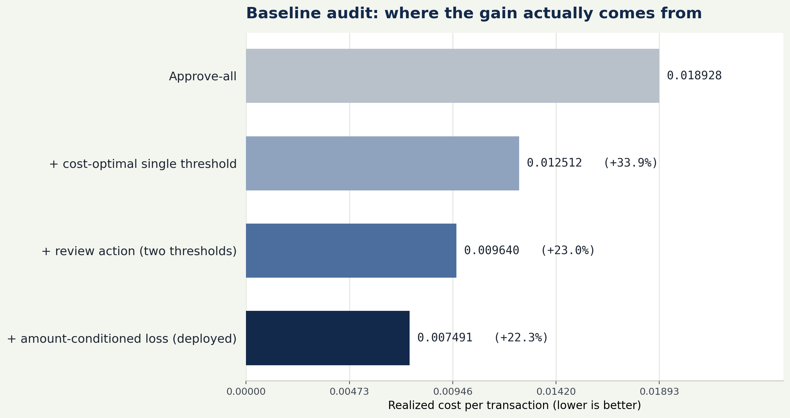

Print to PDF: use Save as PDF, paper A4, margins None, background graphics on.
Case study · Machine learning · 2026
Delayed-Label Fraud Decisioning
A cost-sensitive triage policy for approve / review / block — built, then falsified against capacity, delay, retraining, drift, and calibration.
The thesis: the decision rule matters more than the classifier — and the naive 0.5 baseline overstated the gain by about 2.6×. Against a strong simple baseline, the policy still wins by 22.3%.
The problem
Approve, review, or block in milliseconds — but the fraud label arrives a month later.
Errors are asymmetric: a missed fraud and a false positive do not cost the same.
At a 1.1% base rate, a 0.5 cut-off is almost approve-all.
The system
A calibrated probability feeds an argmin of expected cost. The classifier is an input; the policy is the product.
1 · Read28 application features
2 · Scorecalibrated P(fraud)
3 · Priceapprove / review / block
4 · Stampcheapest action wins
vs the strongest 0.5 cut-off
57.9%
95% CI 53.95% – 62.13%
The number that looks impressive. It is mostly threshold placement, not modeling.
vs the best cost-optimal threshold
22.3%
95% CI 19.71% – 24.95%
The number that survives scrutiny. Above the 5% effect-size bar; CI excludes zero.

Realized cost per transaction, test window (227,491 rows). The steps are sequential: threshold placement, then the review action, then amount conditioning.
Why the second number is the one to defend. The 0.5 baseline is a straw man at a 1.1% base rate. The fair baseline is a cost-optimal threshold tuned on the validation window. The gain decomposes into ~34% from moving to that threshold, ~23% from adding the review action, and ~22% from conditioning the loss on the amount.
First headline57.9%vs a 50% cut-off
Corrected22.3%vs the best cost-optimal threshold
What changedbaselinethe 0.5 cut-off was almost approve-all
The evidence
V2 pre-registered six hypotheses with numeric kill criteria before the tests ran. Three survived, one is fragile, two were killed.
Hypothesis
Verdict
Key result
Review capacity
Survived
44.25% at 2% capacity
Longer label delay
Survived
58.08% on a 2-month split
Rolling retraining
Fragile
LR selected; gap 4.25% / 4.17%
Feature drift
Survived
max PSI 3.94; 9/28 drift
Group disparity
Killed
block-rate gap 2.26pp < 5pp
Stratified calibration
Killed
block ECE 0.0600; bias ~2.1%
What each design choice buys
Comparison
Cost
Gain
Amount-blind (constant loss)
0.009840
—
Amount-conditioned
0.007491
23.9%
No-review (approve/block)
0.010859
—
With review
0.007491
31.0%
Amount conditioning buys 23.9%. The review action buys 31.0%. The two are the contribution, not the classifier.
The artifact
76 tests passing; reproducible pipeline and reports.
227,491 test applications, months the model never saw.
Streamlit decision desk: one application or a CSV batch.
Every decision shows its expected-cost reasoning.
What I would do next
Add a monthly performance curve, not just input drift.
Re-run delay with a fixed evaluation window to isolate label maturity.
Add tail risk (CVaR) and review-queue economics.
What this does not show
BAF is synthetic; these are not production estimates.
One cost matrix and one chronological split.
The 2-month delay result uses a different split.
Fairness was tested on block rate only; review-rate disparity is larger.
Ken Ira Lacson Talingting · BS Machine Learning · National University Philippines
Method in one line
Chronological split (train 0–2, validation 3–4, test 5–6; month 7 censored). Preprocessing fit on train only. Calibration gate ECE < 0.05. Classifier chosen by realized cost under a 5% noise band. Paired bootstrap for uncertainty. Six pre-registered falsification tests.
The one-sentence version. I'm a third-year ML student. I built a decision system for a delayed-feedback problem — and this is what checking my own result looked like.